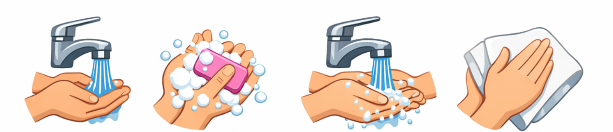
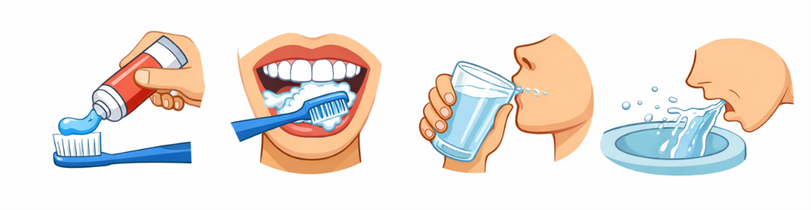
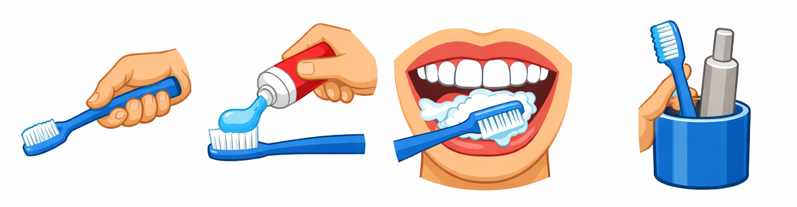
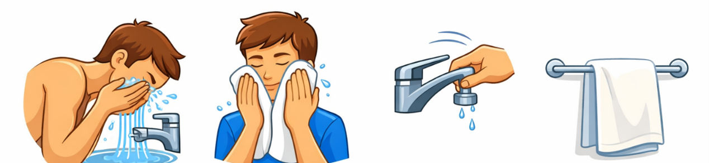
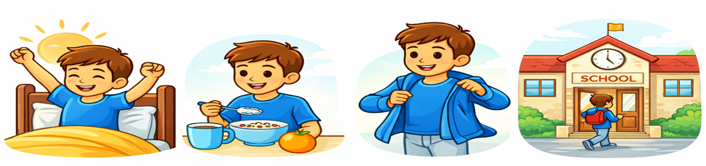
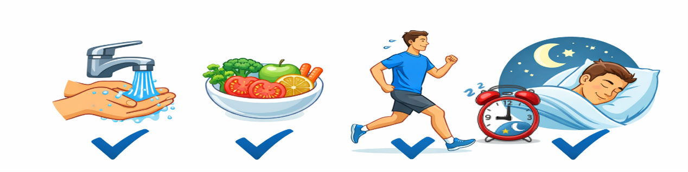

Writing Answers｜First / Next / Then / Last
依序寫出 First / Next / Then / Last 的完整句子（第一人稱 I）。
📄 下載空白練習卷
1
Handwashing
How to Wash Your Hands
洗手
→ 打開水龍頭 → 用肥皂洗 → 沖乾淨 → 擦乾

First,
I turn on the tap and wet my hands.
Next,
I wash my hands with soap.
Then,
I rinse my hands with clean water.
Last,
I dry my hands with a towel.
2
Teeth
How to Brush Your Teeth
刷牙
→ 擠牙膏 → 刷牙 → 漱口 → 吐掉

First,
I put toothpaste on my toothbrush.
Next,
I brush my teeth.
Then,
I rinse my mouth with water.
Last,
I spit the water into the sink.
6
Teeth
How to Brush Your Teeth
刷牙
→ 拿牙刷 → 擠牙膏 → 刷牙 → 放回牙刷

First,
I take a toothbrush.
Next,
I put toothpaste on my toothbrush.
Then,
I brush my teeth.
Last,
I put the toothbrush back.
3
Wash face
How to Wash Your Face
洗臉
→ 用水洗 → 擦臉 → 關水 → 放毛巾

First,
I wash my face with water.
Next,
I dry my face with a towel.
Then,
I turn off the tap.
Last,
I hang the towel up.
4
School
How to Get Ready for School
準備上學
→ 起床 → 穿衣服 → 吃早餐 → 去學校

First,
I get up.
Next,
I get dressed.
Then,
I eat breakfast.
Last,
I go to school.
5
Healthy
How to Stay Healthy
保持健康
→ 洗手 → 吃健康食物 → 運動 → 早睡

First,
I wash my hands.
Next,
I eat healthy food.
Then,
I exercise every day.
Last,
I go to bed early.